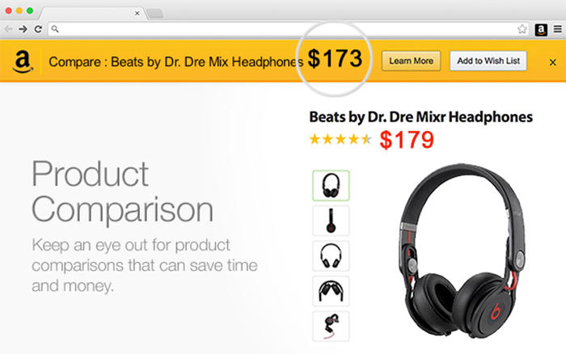
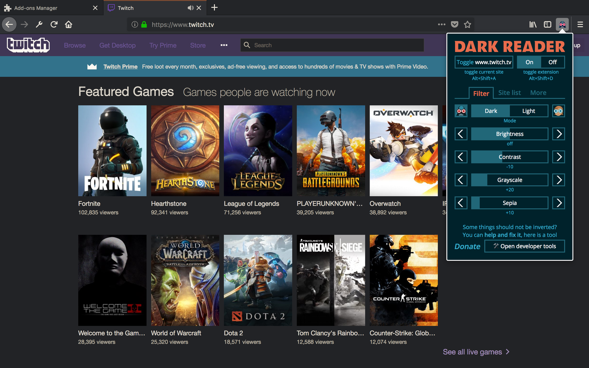
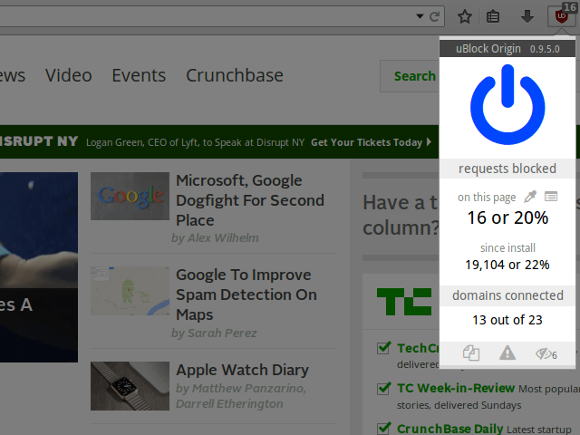
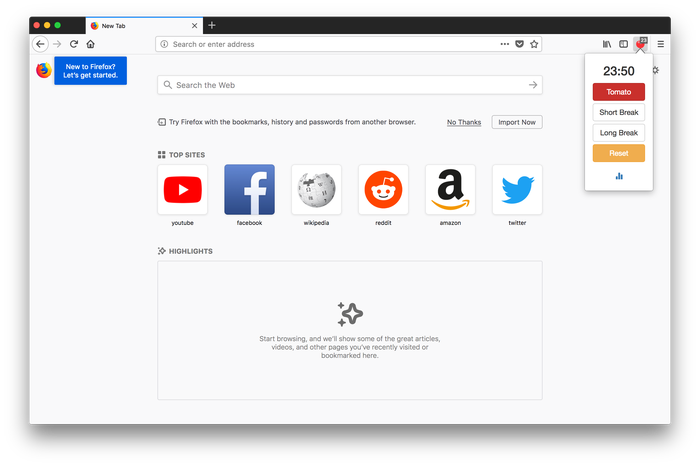
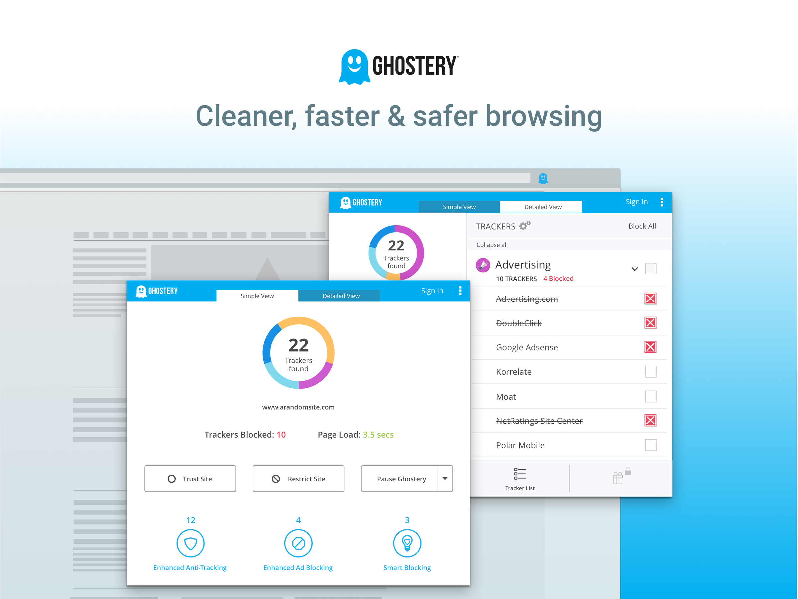
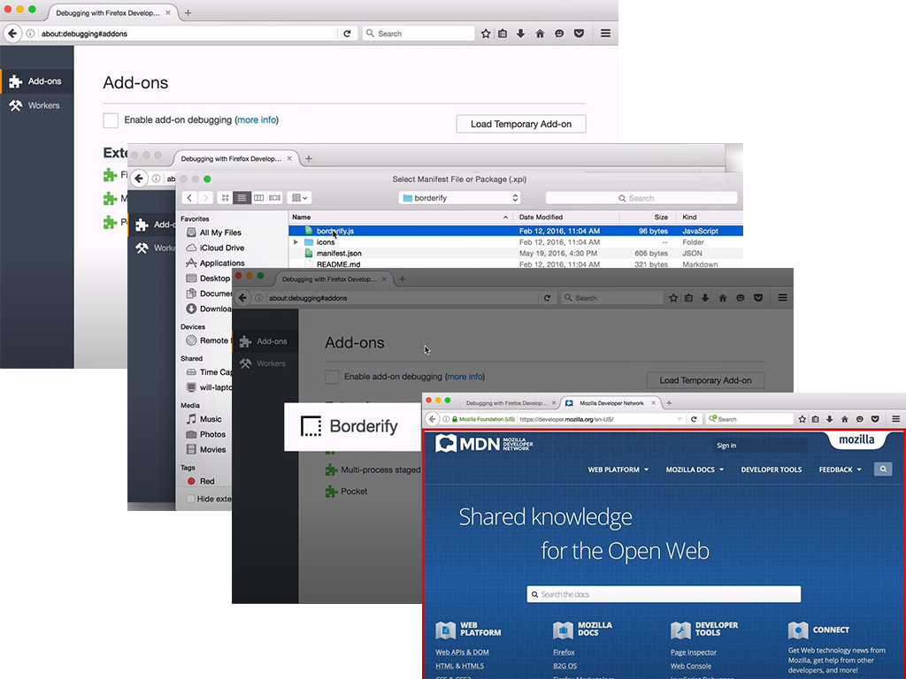
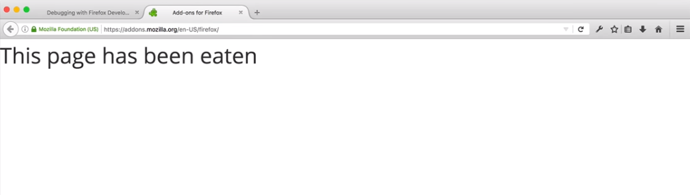
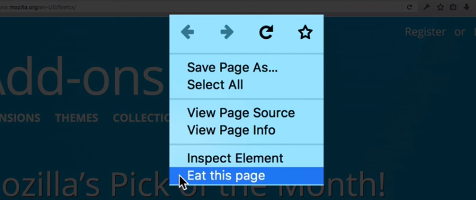

# What is browser Extensions <p>Firmware that expands (complements) the functionality of the browser</p>
# What Extensions can do? --- ## Enhance or complement a website <p class="stretch"></p> Examples: [Amazon Assistant for Firefox](https://addons.mozilla.org/en-US/firefox/addon/amazon-browser-bar/), [To Google Translate](https://addons.mozilla.org/en-US/firefox/addon/to-google-translate/) --- ## Show users their personality <p class="stretch"></p> Examples: [Dark Reader](https://addons.mozilla.org/en-GB/firefox/addon/darkreader/), [Stylus](https://addons.mozilla.org/en-GB/firefox/addon/styl-us/) --- ## Add or remove content from web pages <p class="stretch"></p> Examples: [uBlock Origin](https://addons.mozilla.org/en-US/firefox/addon/ublock-origin/), [Reader](https://addons.mozilla.org/en-US/firefox/addon/reader/) --- ## Add tools and new browsing features <p class="stretch"></p> Examples: [Tomato Clock](https://addons.mozilla.org/en-GB/firefox/addon/tomato-clock/), [Video DownloadHelper](https://addons.mozilla.org/en-GB/firefox/addon/video-downloadhelper/) --- ## Add development tools <p class="stretch"></p> Examples: [Ghostery](https://addons.mozilla.org/en-GB/firefox/addon/tomato-clock/), [NoScript Security Suite](https://addons.mozilla.org/en-GB/firefox/addon/noscript/), [Measure-it](https://addons.mozilla.org/en-GB/firefox/addon/measure-it/)
# Anatomy of an extension <p>An extension consists of a collection of files, packaged for distribution and installation</p> --- ## manifest.json <p>This is the only file that must be present in every extension</p> <p class="stretch"><img src="./examples/assets/3.2.jpg" alt=""></p> --- ## Background scripts <p>Extensions often need to maintain long-term state or perform long-term operations independently of the lifetime of any particular web page or browser window. That is what background scripts are for.</p> <pre><code data-trim data-noescape> // manifest.json "background": { "scripts": ["background-script.js"] } </code> </pre> --- <p>Instead of specifying background scripts, you can specify a background page which has the added advantage of supporting ES6 modules:</p> <p class="stretch"><img src="./examples/assets/3.3.png" alt=""></p> --- ## [Sidebars](https://developer.mozilla.org/en-US/docs/Mozilla/Add-ons/WebExtensions/user_interface/Sidebars), [Popups](https://developer.mozilla.org/en-US/docs/Mozilla/Add-ons/WebExtensions/user_interface/Popups), and [Options pages](https://developer.mozilla.org/en-US/docs/Mozilla/Add-ons/WebExtensions/user_interface/Popups) <img src="./examples/assets/3.5.1.png" alt=""> --- ## Extension pages See [Extension pages](https://developer.mozilla.org/en-US/docs/Mozilla/Add-ons/WebExtensions/user_interface/Extension_pages) to learn more <p>Include HTML documents in your extension which are not attached to some predefined user interface component</p> <p class="stretch"><img src="./examples/assets/3.6.png" alt=""></p> --- ## Content scripts Unlike normal page scripts, content scripts can: - Make cross-domain XHR requests - Use a small subset of the WebExtension APIs - Exchange messages with their background scripts and can in this way indirectly access all the WebExtension APIs See the [content scripts](https://developer.mozilla.org/en-US/docs/Mozilla/Add-ons/WebExtensions/Content_scripts) article to learn more
# Creating your first simple extension <!-- <p>Let's walks through creating an extension for Firefox, from start to finish</p> --> --- ## Writing the extension <p>new directory</p> <pre><code data-trim data-noescape> mkdir borderify cd borderify </code> </pre> <p>manifest.json</p> <pre><code data-trim data-noescape> { "manifest_version": 2, "name": "Borderify", "version": "1.0", "description": "Adds a red border to all webpages matching mozilla.org.", "icons": { "48": "icons/border-48.png" }, "content_scripts": [ { "matches": ["*://*.mozilla.org/*"], "js": ["borderify.js"] } ] } </code> </pre> <p>borderify.js</p> <pre><code data-trim data-noescape> document.body.style.border = "5px solid red"; </code> </pre> --- ## Installing & Testing <p class="stretch"></p>
# Modify a web page <p>One of the most common use cases for an extension</p> <p>is to modify a web page</p> --- ## Two ways - #### [Declaratively](https://developer.mozilla.org/en-US/docs/Mozilla/Add-ons/WebExtensions/Modify_a_web_page#modifying_pages_that_match_a_url_pattern) <p style="font-size:.75em;">Define a pattern that matches a set of URLs, and load a set of scripts into pages whose URL matches that pattern</p> - #### [Programmatically](https://developer.mozilla.org/en-US/docs/Mozilla/Add-ons/WebExtensions/Modify_a_web_page#modifying_pages_programmatically) <p style="font-size: .75em;">Using a JavaScript API, load a script into the page hosted by a particular tab</p> --- ### Modifying pages that match a URL pattern <p style="font-size: .75em;">manifest.json</p> <pre><code data-trim data-noescape> { "manifest_version": 2, "name": "modify-page", "version": "1.0", "content_scripts": [ { "matches": ["https://developer.mozilla.org/*"], "js": ["page-eater.js"] } ] } </code> </pre> <p style="font-size: .75em;">page-eater.js</p> <pre><code data-trim data-noescape> document.body.textContent = ""; var header = document.createElement('h1'); header.textContent = "This page has been eaten"; document.body.appendChild(header); </code> </pre> <p class="stretch"></p> --- ### Modifying pages programmatically <p style="font-size: .75em;">manifest.json</p> <pre><code data-trim data-noescape> { "manifest_version": 2, "name": "modify-page", "version": "1.0", "permissions": [ "activeTab", "contextMenus" ], "background": { "scripts": ["background.js"] } } </code> </pre> <p style="font-size: .75em;">background.js</p> <pre><code data-trim data-noescape> browser.contextMenus.create({ id: "eat-page", title: "Eat this page" }); browser.contextMenus.onClicked.addListener(function(info, tab) { if (info.menuItemId == "eat-page") { browser.tabs.executeScript({ file: "page-eater.js" }); } }); </code> </pre> <p class="stretch"></p>
# Thanks for watching